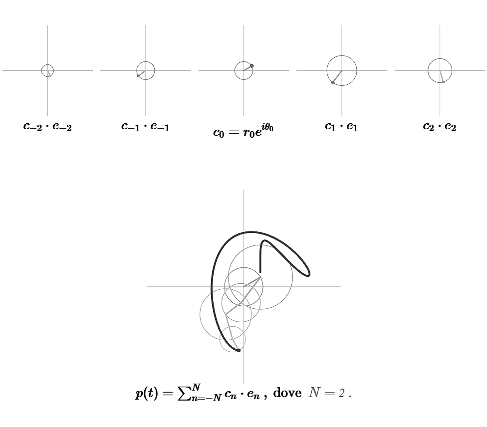
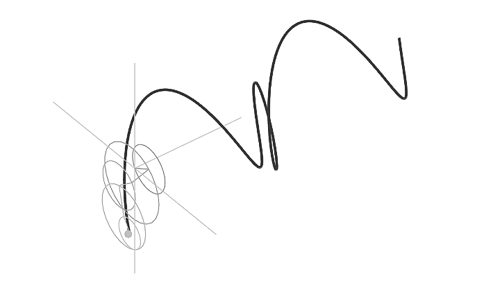
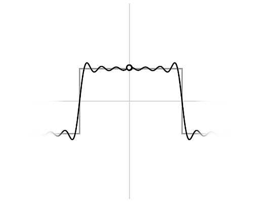

Capitolo 2 Commento alla presentazione
La presentazione segue per sommi capi le prime due lezioni del capitolo II del libro Fourier Analysis and Applications di C. Gasquet e P. Witomski, oggetto della ricerca. Le slide sono autonome da un punto di vista teorico e possono essere utilizzate parallelamente al libro sopracitato come strumento supplementare per l’apprendimento.
Funzionalità
- Le animazioni sono integrate nella presentazione ed è possibile interagire con esse;
- formule, teoremi (o corollari) ed esempi sono demarcati rispettivamente con colore azzurro, verde e giallo per un più semplice riconoscimento;
- formule e teoremi vengono visualizzati in una piccola scheda al passaggio o click del mouse sui rispettivi riferimenti, rendendo immediata la loro consultazione, mentre un ulteriore click su tali schede conduce alla slide in cui sono stati introdotti;
2.1 Segnali trigonometrici
Diciamo polinomi trigonometrici le funzioni del tipo
\[\begin{equation} p(t) = \sum_{n=-N}^N c_n e^{2 i \pi n \textstyle \frac {t}{a}} \ , \tag{2.1} \end{equation}\]
dove \(a,t \in \mathbb{R}, \ c_n \in \mathbb{C}\). \(p(t)\) ha periodo \(a\) e grado minore o uguale a \(N\).
Seguono immediatamente due animazioni per visualizzare un polinomio trigonometrico.
- Nella prima è possibile - tramite rotella del mouse o trascinamento verticale - costruire progressivamente un polinomio trigonometrico aumentandone il grado e, di conseguenza, il numero di addendi.
Il primo elemento visibile è il coefficiente \(c_0\), ovvero un numero complesso. Gli altri elementi sono costituiti dal coefficiente complesso \(c_n\) moltiplicato per \(e_n(t)=e^{2\pi in\frac{t}{a}}\) ovvero la curva chiusa complessa con supporto la circonferenza unitaria, percorsa con frequenza \(n\). Poiché la moltiplicazione di due numeri complessi può essere interpretata come il multiplo di una rotazione, \(c_n \cdot e_n(t)\) rappresenta la curva chiusa con supporto una circonferenza di raggio \(|c_n|\) e una fase \(arg(c_n)=\theta_n\) ( dove \(c_n=r_{n}e^{i\theta_n}\)) rispetto alla curva \(|c_n| \cdot e_n(t)\).
Le varie componenti del tipo \(c_n \cdot e_n(t)\) possono essere sommate con la definizione usuale di somma in campo complesso, ottenendo una curva che rappresenta proprio il polinomio trigonometrico.

- Nella seconda animazione è possibile - sempre tramite rotella del mouse o trascinamento verticale - rivelare l’asse della variabile \(t\) per mezzo di una rotazione tridimensionale, visualizzando il polinomio trigonometrico nello spazio \(\mathbb{R} \times \mathbb{C}\).

Introduciamo quindi \(T_n\), spazio vettoriale dei polinomi trigonometrici \(p(t)\) di grado minore o uguale a \(N\), dotato del prodotto scalare \[(p,q) = \int_{0}^{a} p(t) \overline{q}(t)dt \ .\] Da \((p,n)=ac_n\) ricaviamo quindi la formula di Fourier
\[\begin{equation} c_n=\frac{1}{a} \int_{0}^{a}p(t)e^{-2 i \pi n \textstyle \frac {t}{a}}dt \ . \tag{2.2} \end{equation}\]
Si pone quindi la domanda fondamentale:
se \(f: \mathbb{R} \longrightarrow \mathbb{C} \ \) è una funzione arbitraria di periodo \(a\), possiamo trovare una decomposizione di \(f\) della forma \[\begin{equation} f(t) = \sum c_n e^{2i \pi n\textstyle \frac{t}{a}} \ , \tag{2.3} \end{equation}\] sotto minime ipotesi su \(f\) ?
2.2 Segnali periodici e serie di Fourier
In un celebre articolo del 1807, Joseph Fourier afferma che la risposta a tale domanda sia affermativa, a patto siano consentite somme infinite.
È possibile ridefinire questa risposta con gli strumenti della matematica moderna.
Per farlo introduciamo lo spazio
\[L_{p}^2(0,a)= \{ f:\mathbb{R} \longrightarrow \mathbb{C} \ : \ f \ \text{ ha periodo } a \text{ e } \int_{0}^{a}|f(t)|^2dt < -\infty\bigg\}\]
che, dotato delle usuali operazioni, è uno spazio vettoriale. Definiamo quindi il prodotto scalare \[(f,g) = \int_{0}^{a} f(t) \overline{g}(t)dt \ ,\]
e la norma associata
\[ \Vert f \Vert_2 = \left( \int_{0}^{a} |f(t)|^2 dt \right) ^{\textstyle \frac{1}{2}}\]
Per rispondere alla domanda fondamentale occorre trovare l’elemento \(f_N\) nel sottospazio \(T_n\) di \(L_{p}^{2}(0,a)\) che ha la minima distanza da \(f\). Se esiste, lo chiamiamo la miglior approssimazione di \(f\) in \(T_{n}\).
La soluzione è fornita dal seguente teorema:
Teorema
Esiste un unico polinomio trigonometrico \(f_N\) in \(T_n\) tale che \[ \Vert f - f_N \Vert _{2} = \min_{p \in T_N} \Vert f - p \Vert _{2} \] Questo polinomio è dato da \[\begin{equation} f_{N}(t)=\sum_{n=-N}^{N} c_{n}e^{2\pi in \textstyle \frac {t}{a}} \ , \tag{2.4} \end{equation}\] dove \[\begin{equation} c_n=\frac{1}{a} \int_{0}^{a}p(t)e^{-2 i \pi n \textstyle \frac {t}{a}}dt \ . \tag{2.5} \end{equation}\]
Il passaggio successivo consiste nello studio della convergenza.
Grazie ad un esempio animato, è possibile osservare come l’approssimazione, data da una somma di seni, tenda a alla funzione onda quadra:
- è possibile - tramite rotella del mouse o trascinamento verticale - aumentare in numero di addendi nella somma e, quindi, migliorare l’approssimazione.

In conclusione, è possibile scrivere: \[ f(t) = \sum_{n= - \infty}^{+ \infty} c_n e^{2 i \pi n \textstyle \frac {t}{a}} \ .\] Si noti che questa è un’equivalenza nella norma di \(L_{p}^{2}(0,a)\) e non significa che, per qualunque valore di \(t\), il \(f(t)\) sia uguale alla somma della serie.